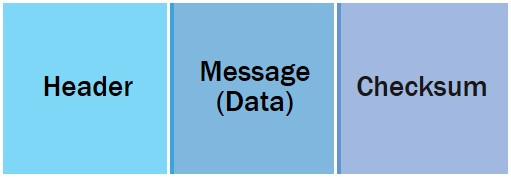

El encabezado TCP/IP es un prefijo para cada mensaje que es enviado por BMV. El Checksum es anexado al final del mensaje así, cada mensaje, cuando es enviado por el Protocolo TCP/IP se ve como sigue:
Donde:
El Checksum es del mensaje completo, incluyendo el encabezado. El Checksum se guarda siempre al final del mensaje y se incluye en el campo de longitud del encabezado. Así es, que los 2 últimos bytes del mensaje se asumen que son del Checksum, si se inicializa apropiadamente el bit de la bandera en el campo banderas del encabezado.
El Checksum se obtiene realizando la operación XOR (OR Exclusivo) en cada palabra (corta) del mensaje completo.
/* CS_CHECKSUM */
/* Este procedimiento calcula el checksum para el mensaje */
short cs_checksum (buf, len)
char *buf; /* Apuntado para recibir el buffer */
short len; /* Longitud del buffer para ser recibido. */
{
short *ptr;
short checksum;
short temp;
short i;
ptr = (short *) buf;
checksum=0;
for (i=0;(i<=((len/2)-1));i++)
{
checksum = checksum ^ ptr[i]; /*^ realiza la operación XOR*/
}
return checksum;
}
The TCP / IP header is a prefix for each message that is sent by BMV. The checksum is appended to the end of the message so each message, when sent by the TCP / IP Protocol, looks like this:
Where:
The Checksum is the complete message, including the header. The Checksum is always stored at the end of the message and is included in the header length field. That is, the last 2 bytes of the message are assumed to be from Checksum, if the flag bit is properly initialized in the header flags field.
The Checksum is obtained by performing the XOR (Exclusive OR) operation on each word (short) of the entire message.
/* CS_CHECKSUM */
/* This procedure calculates the checksum for the message */
short cs_checksum (buf, len)
char *buf;
short len;
asumido*/
{
short *ptr;
short checksum;
short temp;
short i;
ptr = (short *) buf;
checksum=0;
for (i=0;(i<=((len/2)-1));i++)
{
checksum = checksum ^ ptr[i]; /*^ XOR Operation*/
}
return checksum;
}